- Home
- theme
- caracters
- author
Characters:
1.Napoleon:From the very beginning of the novella, Napoleon emerges as an utterly corrupt opportunist. Though always present at the early meetings of the new state, Napoleon never makes a single contribution to the revolution—not to the formulation of its ideology, not to the bloody struggle that it necessitates, not to the new society’s initial attempts to establish itself. He never shows interest in the strength of Animal Farm itself, only in the strength of his power over it. Thus, the only project he undertakes with enthusiasm is the training of a litter of puppies. He doesn’t educate them for their own good or for the good of all, however, but rather for his own good: they become his own private army or secret police, a violent means by which he imposes his will on others.Although he is most directly modeled on the Soviet dictator Joseph Stalin, Napoleon represents, in a more general sense, the political tyrants that have emerged throughout human history and with particular frequency during the twentieth century. His namesake is not any communist leader but the early-eighteenth-century French general Napoleon, who betrayed the democratic principles on which he rode to power, arguably becoming as great a despot as the aristocrats whom he supplanted. It is a testament to Orwell’s acute political intelligence and to the universality of his fable that Napoleon can easily stand for any of the great dictators and political schemers in world history, even those who arose after Animal Farm was written. In the behavior of Napoleon and his henchmen, one can detect the lying and bullying tactics of totalitarian leaders such as Josip Tito, Mao Tse-tung, Pol Pot, Augusto Pinochet, and Slobodan Milosevic treated in sharply critical terms.
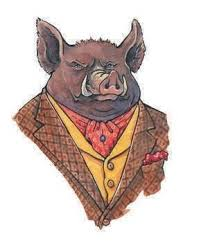
2.Snowball:The pig who challenges Napoleon for control of Animal Farm after the Rebellion. Based on Leon Trotsky, Snowball is intelligent, passionate, eloquent, and less subtle and devious than his counterpart, Napoleon. Snowball seems to win the loyalty of the other animals and cement his power.
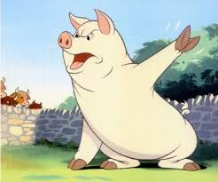
3.Boxer:The cart-horse whose incredible strength, dedication, and loyalty play a key role in the early prosperity of Animal Farm and the later completion of the windmill. Quick to help but rather slow-witted, Boxer shows much devotion to Animal Farm’s ideals but little ability to think about them independently. He naïvely trusts the pigs to make all his decisions for him. His two mottoes are “I will work harder” and “Napoleon is always right.”
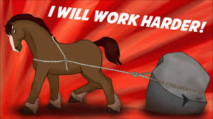
4.Mollie:The vain, flighty mare who pulls Mr. Jones’s carriage. Mollie craves the attention of human beings and loves being groomed and pampered. She has a difficult time with her new life on Animal Farm, as she misses wearing ribbons in her mane and eating sugar cubes. She represents the petit bourgeoisie that fled from Russia a few years after the Russian Revolution.
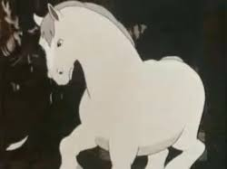
5.Benjamin:The long-lived donkey who refuses to feel inspired by the Rebellion. Benjamin firmly believes that life will remain unpleasant no matter who is in charge. Of all of the animals on the farm, he alone comprehends the changes that take place, but he seems either unwilling or unable to oppose the pigs.
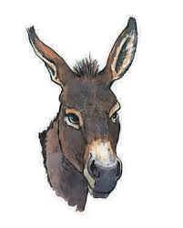
6.Squealer:The pig who spreads Napoleon’s propaganda among the other animals. Squealer justifies the pigs’ monopolization of resources and spreads false statistics pointing to the farm’s success. Orwell uses Squealer to explore the ways in which those in power often use rhetoric and language to twist the truth and gain and maintain social and political control.
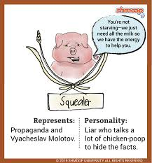
7.Moses:The tame raven who spreads stories of Sugarcandy Mountain, the paradise to which animals supposedly go when they die. Moses plays only a small role in Animal Farm, but Orwell uses him to explore how communism exploits religion as something with which to pacify the oppressed.
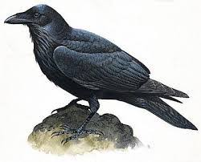
8.Clover:A good-hearted female cart-horse and Boxer’s close friend. Clover often suspects the pigs of violating one or another of the Seven Commandments, but she repeatedly blames herself for misremembering the commandments.
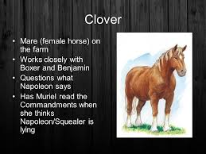
9.Old Major:The prize-winning boar whose vision of a socialist utopia serves as the inspiration for the Rebellion. Three days after describing the vision and teaching the animals the song “Beasts of England,” Major dies, leaving Snowball and Napoleon to struggle for control of his legacy. Orwell based Major on both the German political economist Karl Marx and the Russian revolutionary leader Vladimir Ilych Lenin.

10.Muriel:The white goat who reads the Seven Commandments to Clover whenever Clover suspects the pigs of violating their prohibitions.
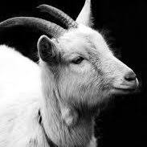
11.Mr.Jones:The often drunk farmer who runs the Manor Farm before the animals stage their Rebellion and establish Animal Farm. Mr. Jones is an unkind master who indulges himself while his animals lack food; he thus represents Tsar Nicholas II, whom the Russian Revolution ousted.
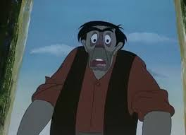
12.Mr.Frederick:The tough, shrewd operator of Pinchfield, a neighboring farm. Based on Adolf Hitler, the ruler of Nazi Germany in the 1930s and 1940s, Mr. Frederick proves an untrustworthy neighbor.
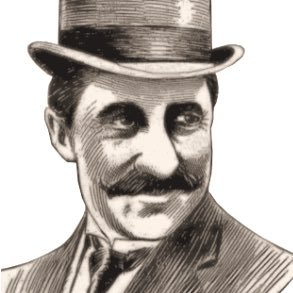
12.Mr. Pilkington:The easygoing gentleman farmer who runs Foxwood, a neighboring farm. Mr. Frederick’s bitter enemy, Mr. Pilkington represents the capitalist governments of England and the United States.
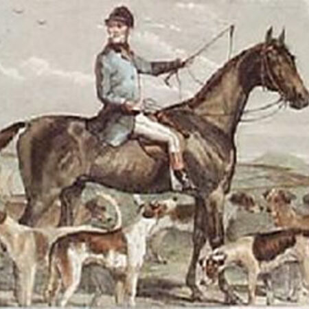
13.Mr.Whymper:The human solicitor whom Napoleon hires to represent Animal Farm in human society. Mr. Whymper’s entry into the Animal Farm community initiates contact between Animal Farm and human society, alarming the common animals.
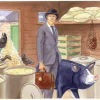
14.Jessie and Bluebell:Two dogs, each of whom gives birth early in the novel. Napoleon takes the puppies in order to “educate” them.

15.Minimus:The poet pig who writes verse about Napoleon and pens the banal patriotic song “Animal Farm, Animal Farm” to replace the earlier idealistic hymn “Beasts of England,” which Old Major passes on to the others.
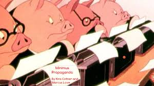